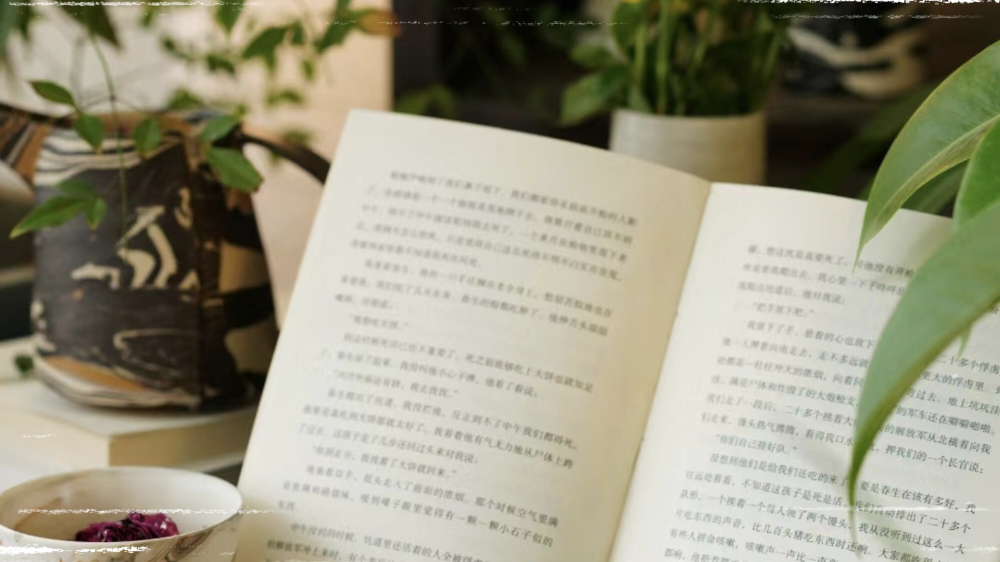

我们山柳读书堂旨在推荐好书并实时更新读书讯息和图书活动，希望大家能用生活所感去读书，用读书所得去生活。
报告显示，全世界有35%的人因为大背景影响增加了阅读量。有网友复盘这一年，哪也没去成，光窝在家里读书了。可是我们大学生又读了多少书呢？诚然，当空间的移动被限制任时，更多人转而可内探索，寻求内心的平静。一本好书，能让在职场中斡旋的年轻人们短暂忘掉现实的压力。从今年畅销书的流行趋势中能看到当下人们正在困惑的、犹豫的和关心的一切。
读书是生活的点缀，是快乐的源泉！我们山柳读书堂认为读书的目的，不在于取得多大的成就。而在于，当你被生活打回原形，陷入泥潭倍受挫折的时候，给你一种内在的力量，让你安静从容地去面对！
当你的才华还撑不起梦想，就静下来读书吧
胸藏文墨怀若谷，腹有诗书气自华
书中有无限远方，书中有岁月人生万象
书中字字可以成为交响，书与生命有一段相遇时光